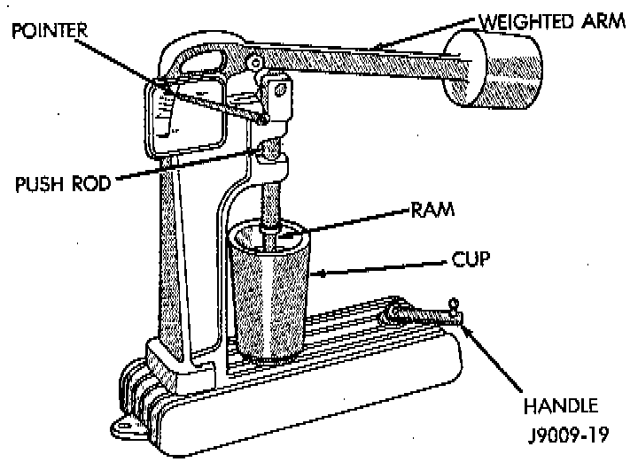

Leak Down Test

CLEANING
Clean each tappet assembly in cleaning solvent to remove all varnish, gum and sludge deposits.
INSPECTION
^ Inspect for indications of scuffing on the side and base of each tappet body.
^ Inspect each tappet base for concave wear with a straightedge positioned across the base. If the base is concave, the corresponding lobe on the camshaft is also worn. Replace the camshaft and defective tappets.
NOTE: After cleaning and inspection, test each tappet for specified leak-down rate tolerance to ensure zero-lash operation.
TEST
Swing the weighted arm of the hydraulic valve tappet tester away from the ram of the Leak-Down Tester.
1. Place a 7.925 - 7.950 mm (0.312 - 0.313 inch) diameter ball bearing on the plunger cap of the tappet.
2. Lift the ram and position the tappet (with the ball bearing) inside the tester cup.
3. Lower the ram, then adjust the nose of the ram until it contacts the ball bearing. DO NOT tighten the hex nut on the ram.
4. Fill the tester cup with hydraulic valve tappet test oil until the tappet is completely submerged.
5. Swing the weighted arm onto the push rod and pump the tappet plunger up and down to remove air. When the air bubbles cease, swing the weighted arm away and allow the plunger to rise to the normal position.
6. Adjust the nose of the ram to align the pointer with the SET mark on the scale of the tester and tighten the hex nut.
7. Slowly swing the weighted arm onto the push rod.
8. Rotate the cup by turning the handle at the base of the tester clockwise one revolution every 2 seconds.
9. Observe the leak-down time interval from the instant the pointer aligns with the START mark on the scale until the pointer aligns with the 0.125 mark. A normally functioning tappet will require 20 - 110 seconds to leak-down. Discard tappets with leak-down time interval not within this specification.